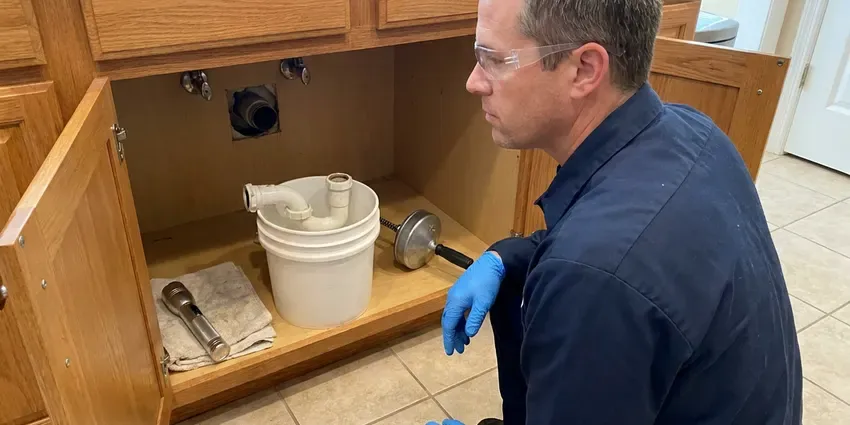

Septic Tank Repair in Shelburne, VT
Our crew fixes tanks, tees, effluent pumps and leach lines across Shelburne, VT, with a written price up front.
- Warrantied Repairs
- Upfront Quotes
- Effluent Pump Service
- Baffle and Tee Replacement

Septic Tank Acting Up in Shelburne, VT?
Call CKV Plumbing and we will find the failed part and fix it without guesswork.
Septic Repair for Shelburne, VT Homes Off the Sewer
Odors you cannot place, a lawn that stays wet, a toilet that gurgles, an alarm that chirps at two in the morning. We take these calls every week around Shelburne, and every symptom narrows to a few likely parts. A camera plus a steel probe usually find the problem in under an hour. Most are fixable.
Our expertise includes:
- Distribution box leveling and replacement
- Effluent filter installation and cleaning
- Inlet and outlet baffle replacement

Additional Plumbing Repair Services in Shelburne, VT
We offer expert plumbing repair services across Shelburne, VT to fix leaks, restore flow, and keep your system running smoothly.


Customers
Why Choose CKV Plumbing for Septic Tank Repair in Shelburne, VT?
We fix the cause, not the symptom. Pumping a tank that backed up from a broken inlet tee buys you a few weeks at most, so the tee gets checked before any pumping. The tee check takes ten minutes.
- System Experience, Our crew has worked on conventional and aerobic systems all over the Shelburne area.
- Permit Handling, We file the permit paperwork with the local health department when a repair needs approval.
- Local Ground Know-How, We have dug in the soils around Shelburne for years and know what lasts in that ground.
Citywide Coverage
Every neighborhood in the Shelburne area that never connected to city sewer gets the same service from us, near or far. Manufactured homes and cabins get the same attention as larger houses. Small commercial lots are covered too. Calls are routed by area so wait times stay short.
Experienced Team
Our septic techs are licensed plumbers, and most have spent ten years or more digging around tanks and field lines. They can tell a bad distribution box from a dead field just by the trench pattern. Training is ongoing. Every tech takes annual classes on code changes and new gear.
Safety-First Approach
Every permitted repair gets documented, and copies of the permit and the final inspection go into your file, along with our camera photos. Buyers ask for those. Good records make a home sale go smoother.
Trusted Certified Shelburne Plumbing Services Professionals
At CKV Plumbing, we are proud to offer certified plumbing services throughout Shelburne, VT. Credentials matter in this trade. Our plumbers hold recognized industry credentials, and they follow strict safety and quality rules on every repair, installation and maintenance call we run.
Call Us Now PHCC Plumbing Contractor Recognition
PHCC Plumbing Contractor Recognition Better Business Bureau (BBB) Accreditation
Better Business Bureau (BBB) Accreditation Angi Certified Pro
Angi Certified Pro ISO 9001 Quality Management Certification
ISO 9001 Quality Management CertificationFrom Tank to Drain Field: Septic Repair in Shelburne, VT
Inlet and Outlet Baffle Replacement in Shelburne, VT
Baffles hold back the scum layer on top and the sludge on the bottom so only clear effluent leaves the tank. Concrete ones get eaten by sulfuric acid from sewer gas and eventually fall off into the tank. Once the outlet baffle is gone, solids head straight for the field. We replace them with PVC sanitary tees. Usually a short job.

Leach Field Restoration in Shelburne, VT
Before we condemn a leach field, we open the distribution box and look at how evenly it splits the flow. A box that has settled or cracked can push all the effluent into a single trench. A new or leveled box brings a lot of fields back. Some fields are past saving. For those, we explain the design and permit steps.
Emergency Septic Repair in Shelburne
Sewage in the shower pan on a Sunday is an emergency, and we treat it like one. The first thing we ask is whether the tank has a riser we can reach, because uncovering a buried lid can add an hour or more. Stop using water until the tech arrives. Then we find the blockage, clear it and tell you what caused it.
Septic Repair Costs Compared in Shelburne, VT
Baffle or tee replacement often runs $300 to $900. Replacing an effluent pump, floats included, typically costs $900 to $2,000, and inlet line repairs run $800 to $3,000 depending on depth and length. Leach field restoration or replacement can cost $5,000 to $20,000 or more. The cheapest fix that actually works is the one we push for.
Septic Pipe Repair in Shelburne, VT
Old homes may still have clay tile or Orangeburg pipe running to the tank, and both fail badly with age. Clay soils in river valleys drain poorly and can hold water against foundations, so sump systems are common in low-lying homes. Roots and settling ground split joints and crush the pipe. We replace the bad run with 4-inch PVC, set on sand bedding with a quarter inch per foot of fall. Short sections take an afternoon.
After-Hours Septic Backup Calls in Shelburne
Late-night backups usually start in the lowest drain in the house, often a basement floor drain or a first-floor shower. The after-hours truck has a jetter and spare floats on board, which means most calls end with the drains working. Bad nights end with a pump truck. Either way, you know what failed before we leave.
Septic Lid and Riser Repair in Shelburne
Old concrete lids crack, and a cracked lid over a 1,000-gallon tank is a real danger to kids and pets. We replace failing lids and add risers that bring access up to the lawn. Future pumping gets cheaper. Every lid we set is screwed down or locked so a child cannot lift it.

Drain Field Repair in Shelburne, VT
Green stripes over the trenches and a wet lawn in dry weather are the classic signs of a field in trouble. The cause is usually biomat, a black layer of slime that seals the soil. Compaction and hydraulic overload caused by a leaking fixture are the other usual causes. We test before recommending anything big. Resting or jetting can bring a field back.
Local Septic Tank Repair for Shelburne, VT
Older neighborhoods and newer developments near Shelburne both have septic systems, built to very different standards. Older tanks are often steel or single-compartment concrete, while newer ones these days usually have two compartments and an effluent filter. We work on both. Steel tanks rust through, so we check the lid edges first.
Local work means we have seen your type of system before, probably on your street. Builders in each subdivision tend to use the same tank and field layout, so we can usually guess where the lid is before we probe. CKV Plumbing keeps service notes by address. Repeat visits go quicker because of it.
CKV Plumbing at a Glance
- Fully licensed plumbing team covering Shelburne, VT
- Same-day appointments and 24/7 emergency response
- Clear written estimates, no hidden fees
- 4.8-star rated by 553+ Vermont customers
Shelburne Map
Shelburne Information
- Population
- 6,178
- Area codes
- Local
- Service area
- Shelburne and communities within 40 miles
- Nearby
- South Burlington, Burlington, Winooski, Essex Junction
Clay soils in river valleys drain poorly and can hold water against foundations, so sump systems are common in low-lying homes. The soil under the field sets how long it will keep taking water, so we check the field along with the tank in Shelburne, VT.
Talk to a Plumber
Reach out to CKV Plumbing for reliable plumbing work done by licensed pros in Shelburne, VT.
Our Specialized Plumbing Services in Shelburne, VT
At CKV Plumbing, you get every kind of plumbing service from one company across Shelburne, VT. From leak detection to full system installs, our team works fast and charges fair prices on homes and commercial properties alike. Here are the core services we offer:


How a Septic Repair Visit Goes in Shelburne, VT
Our septic repairs in Shelburne, VT start with a diagnosis and end with a flow test.
Call and Describe It
Call (802) 209-5139 and tell us what you are seeing, plus when the tank was last pumped if you know.
Locate and Inspect
A licensed tech finds the tank, opens it and checks the level and the tees.
Repair and Test
Once you approve the price, we make the repair and flush the fixtures to confirm flow.
Frequently Asked Questions About Septic Tank Repair in Shelburne
Prices start around $300 for a single baffle and climb past $5,000 for field work or a brand new tank. Most of the spread comes from depth and access. CKV Plumbing quotes in writing after the on-site diagnosis, and the number does not move once we start.
We do. Every repair comes with a written workmanship warranty, and new parts carry the manufacturer's coverage on top of it. If a part we installed fails under warranty, we come back and replace it without any arguing about whose fault it was.
Sewage odor near the tank and slow drains throughout the house are the two most common early signs we see. A strip of extra-green lawn over the trenches is another. A tub that gurgles after a flush tells us air is being pushed around a clog.
Yes, and the terms are printed on your invoice. We warranty the workmanship on each repair, and new pumps and alarm panels also carry the manufacturer's warranty on top of ours. Field work terms depend on the design.
Soil decides how fast the field can take water, which decides how long it lasts. Clay soils in river valleys drain poorly and can hold water against foundations, so sump systems are common in low-lying homes. Dense clay soaks water in slowly and backs up the trenches in wet weather, while very sandy or gravelly ground lets effluent through before it is cleaned. We dig a test hole before quoting field work.
A tee or pump swap usually needs no permit. Field work or a new tank usually requires one, and the health department typically inspects before anything is covered. We pull the permit and meet the inspector on site.
Sometimes, and it is worth checking before you pay for a new one. Many fields that look dead from the surface come back after the laterals are jetted and the D-box is leveled. Resting the field for a few months while the biomat breaks down can also work. Sealed soil cannot be fixed.
Get the tank pumped every three to five years and have the effluent filter cleaned at the very same visit. Repair any toilet that runs or faucet that drips as soon as you notice. A single leaking flapper can push hundreds of gallons a day into the field. Keep wipes out.
Hear From Customers Who Hired Our Plumbing Experts

Daniel K.
A pipe burst in the garage ceiling at 11 at night. Someone answered on the second ring, and the plumber was in my driveway about fifty minutes later. He shut off the main, cut out the split section, and had water back on before 2 am.
Emergency Plumbing · St. Albans, VT
Diane F.
My kitchen faucet had dripped for months and I finally got tired of hearing it at night. CKV Plumbing came out the next morning, replaced the cartridge and the O rings, and tightened a loose base that was letting water under the sink.
Faucet Repair · Winooski, VT
Lisa C.
Water was pouring out from under the washing machine on a holiday weekend. CKV Plumbing talked me through closing the valves over the phone and had a plumber at the house within ninety minutes. It was a burst fill hose.
Emergency Plumbing · St. Albans, VT
Laura S.
Our 40 gallon tank started leaking from the bottom after thirteen years. The tech hauled the old one out, set a new unit with a fresh expansion tank, and had hot water running in about four hours. He took the old tank with him too.
Water Heater Replacement · Middlebury, VTEmily R.
The shutoff valve under our kitchen sink snapped off in my hand on a Sunday morning. CKV Plumbing had someone out by early afternoon. He replaced both angle stops with quarter turn valves and showed me where our main shutoff was, which I honestly did not know.
Plumbing Repair · Middlebury, VTMegan L.
Our upstairs tub drained so slowly that every shower turned into a bath. CKV Plumbing pulled a wad of hair out of the stopper and then snaked the line past the trap. Three months later it still drains fast.
Drain Cleaning · Winooski, VT